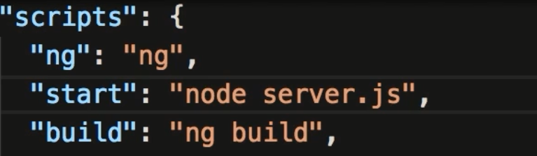
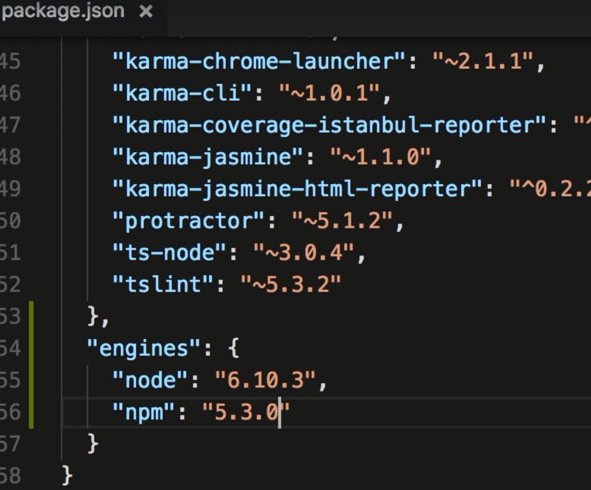

Section 12. Deployment
154. Preparing for Deployment
- Describes optimization techniques. All these techniques are optimized in the ng build -prod command
155. JIT vs AOT Compilation
- Describes the benefits of AOT.
156. Angular Compiler in Action
- Not sure about this. Showing how to use the Angular Compiler. Runs from node_modules/.bin/ngc
- Just a demo. Errors are caught during complication
157. Building Applications with Angular CLI
- To create a build you run: ng build --prod
- If you were to run without the --prod, the build creates bundles and adds these javascript bundles to the index.html file
- This would be an example of JIT version of your web page. The compiler is a part of the bundles. No optimization has occured.
- The build process creates files in the dist folder.
158. Environments
- Looks at the environments folder:
- There are 2 files: environment.ts and environment.prod.ts. You can add these files to your project when you want to specify
differences in prod and dev. When importing always reference environments.ts (not .prod.). In this file you can, as in this example
have a different background based on which env you are running in (prod or dev).
- When running ng serve the default is to run in development. To run in prod run ng server --prod
159. Adding Custom Environments
- You can create other environments, such as test. Create environment file such as environment.test.ts. You need to register This
new env file in .angular-cli.json "enviroments key". Remember to set the prod value to false.
- To run: ng server --environment=test. Only the dev environment has hot module replacement. If you make changes, ng serve will not update.
You will have to stop ng serve and restart.
160. Linting with Angular CLI
- You can use standards to your coding and then run the linter to check for errors. Use TSLint.
- TSLint is installed by default. You can run ng lint. Creates an error report.
- You can have rules fixed by running ng lint --fix
161. Linting in VSCode
- Install the tslint extension. Issues will be underlined and give you a hint.
- Shift-Ctrl-P gets you the command pallette. Type tslint.. you will get an intellisense list of fixes.
162. Other Deployment Options
- Lays out some of the options to deploy such as GitHub Pages(no backend), Firebase (has a backend), or Heroku (Azure... a little more complicated).
163. Deploying to GitHub Pages
- Goto pages.github.com. Uses your github repository.
- Go to github.com and create a repository. Follow the instructions to upload your project to the github repository.
- install globally npm i -g angular-cli-ghpages
- When building your app type: ng build --prod --base-href "https://bazookajoegolf.github.io/repository-name/" (trailing slash is important)
- the --base-ref shows where the base reference is.
- deploy using : ngh at the command prompt. ngh --no-silent to see if there are errors. You could get permission issues unless you use sudo.
- Goto https://bazookajoegolf.github.io/your-repository
- Simplify by adding to the package.json file.
- To run the custom command run: npm run deploy:gh
164. Deploying to Firebase
- Go to https://console.firebase.google.com and login and create a new project.
- Need firebase tools. npm i -g firebase-tools
- run: firebase login and login
- run: firebase init . In the wizard select hosting, choose your app.
- Open firebase.json and type the following:
- To build run: ng build --prod
- Deploy to firebase by running firebase deploy . After deploying it should prompt you with the url.
- You will get an error if you refresh index.html. this is because firebase thinks the url is a pointer to a page instead of an "Angular Page"
- To fix modify your firebase.json file and add :
- You can create a custom script again in package.json under "scripts" type: "deploy:firebase": "ng build --prod && firebase deploy
- To deploy run: npm run deploy:firebase
165. Heroku
- A PaaS service. You can deploy front end and backend to Heroku.
- https://devcenter.heroku.com/.... you're looking to download and install there client cli.
166. Deploying to Heroku
- Check that the cli is installed by running heroku --version
- run: heroku login
- heroku create. If you don't enter a create (must be unique) name heroku will do this for you. After it will display the url.
- You need to modify package.json. You need to move the 2 angular compiler lines from devDependenies to the dependencies object.
- You also need to move typescript to dependencies
- Add a postinstall item to the scripts object.
- In this example we are using express as a part of the backend. To support you need to install: npm i express --save
- To run this app we have to run in the context of a node server. To do this you need to modify the start key to run Node

- Our Node server.js looks as follows:
- You then have to commit all files and commit
167. Engines
- To make sure that Heroku is using the same version of Node and npm you've developed on you should add an "engines" object tothe bottom
of your package.json file. To find out the version of node and npm you've been using run node --version : npm --version.

168. Exercise
- Goes through deploying to all 3 hosts.